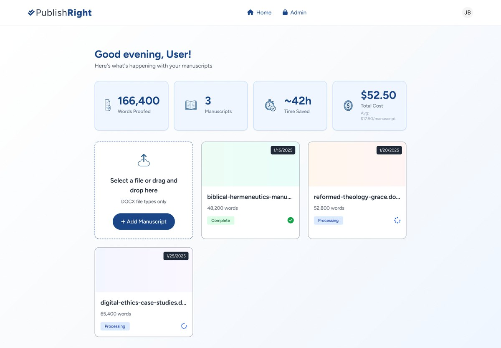
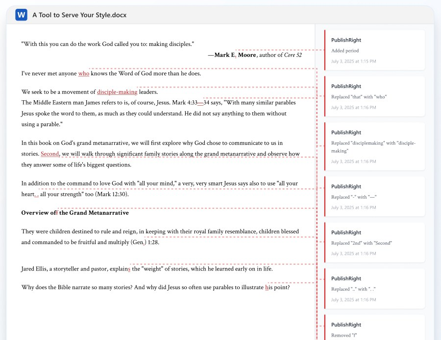

Publishing
An AI proofreader that keeps editors in charge
A joint venture between Rev3 Labs and a publishing company, built to run copyediting and proofreading passes in minutes instead of hours or days. As a founding member, I designed the brand, the marketing site and the product, for an audience that was wary of AI from the start.
- My role: Founding member, sole designer
- Team: Rev3 Labs and a publishing partner
- Status: Live, about a year in market

The problem
A copyediting or proofreading pass on a full manuscript takes hours or days of careful human attention. Our technology could do a first pass in minutes, applying a publisher's own house style, not just a generic writing guide.
The harder problem wasn't the technology. It was trust. Our first audience was Christian book publishers, and the people we were selling to (in-house editors, freelancers, proofreaders) had real fear about AI taking their work. A product that looked like a replacement would never get a chance.
Who it's for
In-house editors, freelance copyeditors and proofreaders. They know publishing deeply, they work in Word with tracked changes every day, and they have little patience for tools that make them learn a new way of working.
Three decisions that shaped it
Say "accelerator," and mean it
The brand and every line of copy had one job: make clear this is a tool that speeds people up, not one that replaces them. Publishing stays a human craft. The tool takes the mechanical pass, so people can spend their time on the work that needs them.
I worked closely with the partner company's founder, who runs his own publishing house and knows this audience far better than any of us. I listened to his read on the industry, pushed back where the copy explained too much, and questioned it from a product angle. The result is a brand built on trustworthy, precise and clear, and a site that says less, not more.


Hand back work editors already know how to review
Instead of a new editing interface to learn, the corrected manuscript comes back as a Word document with every change tracked. Editors review it the way they always have: accept, reject, move on. The tool never gets the last word; the editor does. And it follows the publisher's own style guide, so its edits read like their house, not like a generic grammar checker.

Upload it and walk away
A full manuscript takes time to process, so the product doesn't make anyone watch a progress bar. Upload a .docx and go. An email says when it's ready. The dashboard keeps every manuscript in one place with a clear status, and each one has its summary, its history, and both the original and the corrected file to download.

No billing surprises. Customers buy credits up front, and every manuscript shows what it cost. If a run would take an account past its balance, the product stops before it starts and offers to buy more right there, so nobody finds out about a shortfall halfway through.
Where it stands
The product has been in market for about a year. The first audience was Christian publishers, and that's still the core, but the same tool turned out to fit a wider range of publishers, so the positioning is opening up while keeping the niche it was built for.
Angular and Tailwind on the front end, .NET and Azure AI services behind it, with Stripe for credits.